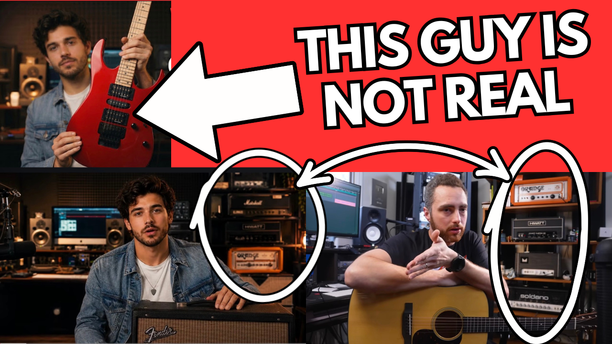
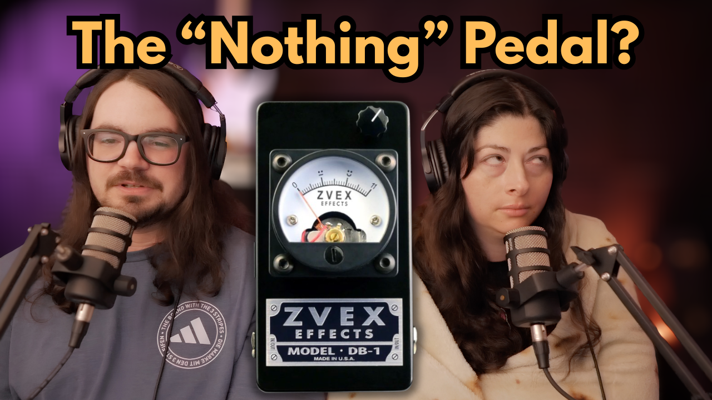

Latest Episodes
| Thumbnail | Episode | Description | Watch | Listen |
|---|---|---|---|---|
|
 |
Episode 88 This Guitar YouTuber is AI SLOP |
We investigate the YouTube channel Guitar Gems with Chase and examine the evidence that led us to conclude it is an AI-generated content farm. | Watch | Listen |
|
Episode 87 The Fender Summer Releases Are... Weird |
We cover the latest releases from EarthQuaker Devices, Cornerstone, and Epiphone before discussing Fender's unusual lineup of summer product announcements. | Watch | Listen | |
|
 |
Episode 86 The Internet Already Hates This Pedal... |
We break down the week's biggest gear news, including new pedals, new guitars, industry updates, and one controversial pedal release that already has guitar players talking. | Watch | Listen |